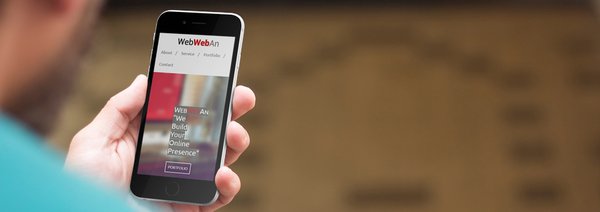

Diposting oleh M. Irsyad Fauzan pada 17 Januari 2016 18:22

Kenapa Desain Website Harus Responsive – Apa sih sebeneranya maksud desain responsive itu? adalah desain yang dapat diakses secara fleksibel baik melalui smartphone, tablet, maupun perangkat komputer, yang secara otomatis menyesuaikan dengan ukuran layar perangkat yang digunakan oleh pengguna. Website yang memiliki desain yang rapi dan bisa diakses secara sempurna melalui smartphone mulai menjadi trend saat ini. Hal ini dikarenakan pengguna internet sudah banyak menggunakan perangkat mobile. Untuk itu, website yang dapat secara fleksibel menyesuaikan tampilan dengan ukuran layar, atau yang sering disebut dengan desain web responsive sangatlah penting. Website menjadi hal yang sangat penting saat ini, para pelaku usaha mulai merasakan bagaimana website menghasilkan untuk mereka. Website menjadi tempat untuk mendapatkan calon pembeli atau hanya pengunjung biasa dari seluruh dunia.
Kelebihan dari desain website responsive adalah website akan bisa diakses melalui pernagkat mobile seperti smartphone dan tablet tanpa harus zoom browser, menggeser ke kanan dan ke kiri untuk memperlihatkan tampilan website keseluruhan. Hal ini sebagai bentuk kepedulian pemilik website kepada pengguna, sehingga para pengunjung dan pengguna website Anda akan merasa nyaman ketika mengakses website Anda melalui perangkat mobile. Walaupun biaya pembuatan Website responsive sedikit lebih mahal dibanding website biasa, tapi jika dibandingkan dengan membuat setidaknya tiga versi desain website, yaitu versi komputer, tablet dan juga smartphone ini bukanlah hal yang layak dicoba dan digunakan.
Sebuah halaman web merupakan berkas yang ditulis sebagai berkas teks biasa (plain text) yang diatur dan dikombinasikan sedemikian rupa dengan instruksi-instruksi berbasis HTML atau XHTML, kadang-kadang pula disisipi dengan sekelumit bahasa skrip. Berkas tersebut kemudian diterjemahkan oleh peramban web dan ditampilkan seperti layaknya sebuah halaman pada monitor komputer.
Halaman-halaman web tersebut diakses oleh pengguna melalui protokol komunikasi jaringan yang disebut sebagai HTTP, sebagai tambahan untuk meningkatkan aspek keamanan dan aspek privasi yang lebih baik, situs web dapat pula mengimplementasikan mekanisme pengaksesan melalui protokol HTTPS.